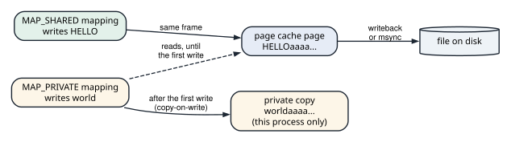

Mapping files and copying less
This chapter covers
- The kernel page cache: how file data resides in physical RAM and why
readincurs a user-space copy - Demand-paged virtual memory mappings (
mmap): page table population via minor and major page faults - Shared (
MAP_SHARED) and private (MAP_PRIVATE) mappings, explicit writeback viamsync, and copy-on-write isolation - Asynchronous error delivery (
SIGBUS), cross-process aliasing hazards, and selection criteria betweenmmapandread - Kernel-space file-to-socket transfer via
sendfileand scatter-gather DMA zero-copy transmission - The architectural boundary where user-space TLS encryption and dynamic compression preclude zero-copy I/O
Every conventional file transfer across the user-kernel boundary pays a memory bandwidth tax: the kernel copies file bytes from its internal page cache into a caller-allocated buffer, and a subsequent network transmission copies those same bytes back into a kernel socket buffer. Eliminating redundant copies requires either exposing page cache frames directly in a process’s virtual address space through demand-paged memory mappings (mmap) or delegating file-to-socket movement entirely to the kernel (sendfile). Both mechanisms shift the cost profile of I/O from linear byte copying to virtual memory management, page fault handling, and scatter-gather DMA descriptors.
Two reference programs quantify these mechanisms. mmap_file maps a 64-page file into virtual memory, records minor page faults across consecutive traversal passes, and contrasts write propagation under shared and private mappings. zero_copy transmits a 256 MiB file over a loopback TCP socket, measuring system call volume and wall-clock throughput for a conventional read/write loop against Linux sendfile.
23.1 Where a file’s bytes live
The operating system maintains recently accessed file blocks in physical memory inside the kernel page cache, indexed by file inode and page offset (page 0 spans bytes 0 to 4,095, page 1 spans bytes 4,096 to 8,191, and so forth). All buffered file I/O traverses this cache: reading an uncached page triggers a storage read into a newly allocated page frame, whereas subsequent reads of that page by any process are satisfied directly from RAM.
Because the page cache resides in kernel address space, the read system call cannot expose a cached physical frame directly to user space. Instead, the kernel copies the requested byte range from the page cache into a caller-supplied buffer. Upon return from read(fd, &mut buffer), the same data occupies physical memory twice: once in the kernel page cache and once in the process’s heap or stack buffer.
A demand-paged memory mapping eliminates this duplication. The mmap system call reserves a contiguous virtual address range within the process’s address space, associates it with a specified byte range of an open file descriptor, and returns the base virtual address. When the process dereferences an address within that range, the hardware memory management unit (MMU) translates the virtual address through the page table directly to the physical frame in the kernel page cache (Figure 23.1), granting direct in-place access without a copy.

read copies from the page cache into a user-space buffer. A mapping points at the page cache's frames.As depicted in Figure 23.2, a file mapping constitutes a standard virtual memory area (VMA) within the process’s address space alongside the stack, heap, and executable text segments. Its page table entries resolve directly to the physical frames managed by the kernel page cache.

Invoking mmap transfers no file data and populates no page table entries; it records only the virtual memory area metadata in the kernel. The initial memory access to each mapped page triggers a hardware page fault (Section 15.5), trapping into the kernel. The page fault handler locates the target page in the page cache (or schedules a block I/O read if the page is absent), installs the corresponding page table entry, and resumes the faulting instruction. A fault satisfied from an already-resident page cache frame is a minor fault (costing microseconds), whereas a fault requiring block storage I/O is a major fault (dominated by storage latency).
For a 64-page mapping whose backing file is already resident in the page cache, fault accumulation proceeds in three distinct phases:
| Step | What the kernel does | Faults |
|---|---|---|
mmap of 64 pages | reserves 64 pages of addresses, fills no entries | 0 |
| first read of each page | fills that page’s entry | one per page |
| second read of each page | nothing: the entries are already filled | 0 |
The remainder of this section encapsulates the mapping lifecycle in an RAII Rust wrapper and verifies this fault profile empirically.
23.1.1 A type that owns a mapping
Direct invocation of mmap requires FFI bindings through the libc crate. A live mapping consists of a base virtual address and a byte length that must be released via munmap exactly once. Encapsulating these invariants in an owning struct with a Drop implementation ensures deterministic unmapping:
use std::{
fs::{self, File},
io,
os::fd::AsRawFd,
path::Path,
ptr::NonNull,
slice,
};
/// A file mapped into this process's address space. Unmapped when dropped.
struct Mapping {
ptr: NonNull<u8>,
len: usize,
}The NonNull<u8> pointer encodes the invariant that a constructed Mapping always holds a non-null virtual base address. The libc crate exposes POSIX C interfaces through unsafe extern "C" declarations parameterized by platform ABI types: c_int for C int, size_t for unsigned byte counts, off_t for file offsets, and *mut c_void for untyped pointers. The contract of mmap is specified as follows:
unsafe extern "C" {
fn mmap(
addr: *mut c_void, // where to map; null lets the kernel choose
len: size_t, // how many bytes to map
prot: c_int, // what is allowed: PROT_READ | PROT_WRITE
flags: c_int, // MAP_SHARED or MAP_PRIVATE (section 23.2)
fd: c_int, // the open file
offset: off_t, // where in the file; a multiple of the page size
) -> *mut c_void; // the mapping's address, or MAP_FAILED
}Invoking an extern "C" function requires an unsafe block because the Rust compiler cannot verify pointer validity, alignment, or lifetime invariants across the foreign function boundary. Mapping::new executes the system call and validates its return value:
impl Mapping {
/// Map the first `len` bytes of `file` for reading and writing.
///
/// `shared` chooses `MAP_SHARED`, whose writes reach the file, over
/// `MAP_PRIVATE`, whose writes stay in this process.
fn new(file: &File, len: usize, shared: bool) -> io::Result<Self> {
let flags = if shared {
libc::MAP_SHARED
} else {
libc::MAP_PRIVATE
};
// SAFETY: a null address lets the kernel choose where to place the
// mapping, and the descriptor is open for reading and writing. The
// result is checked against MAP_FAILED before it is used.
let address = unsafe {
libc::mmap(
std::ptr::null_mut(),
len,
libc::PROT_READ | libc::PROT_WRITE,
flags,
file.as_raw_fd(),
0,
)
};
if address == libc::MAP_FAILED {
return Err(io::Error::last_os_error());
}
let ptr = NonNull::new(address.cast::<u8>()).ok_or_else(io::Error::last_os_error)?;
Ok(Self { ptr, len })
}
// ...
}On failure, mmap returns the sentinel value MAP_FAILED ((void *)-1) rather than a null pointer; the constructor therefore compares the result against MAP_FAILED before reading errno via io::Error::last_os_error().
Safe byte-level access is exposed through shared and mutable slices constructed from the base pointer and length:
impl Mapping {
// ...
fn bytes(&self) -> &[u8] {
// SAFETY: the mapping is `len` bytes long and stays valid until drop.
unsafe { slice::from_raw_parts(self.ptr.as_ptr(), self.len) }
}
fn bytes_mut(&mut self) -> &mut [u8] {
// SAFETY: as in `bytes`, and `&mut self` makes this the only borrow.
unsafe { slice::from_raw_parts_mut(self.ptr.as_ptr(), self.len) }
}
// ...
}Because bytes_mut requires &mut self, the borrow checker enforces exclusive mutable access within the current process, matching the aliasing discipline of Vec<u8>. Releasing the virtual address range in Drop invokes munmap with the original base address and length:
unsafe extern "C" {
fn munmap(addr: *mut c_void, len: size_t) -> c_int; // 0, or -1 with errno set
}impl Drop for Mapping {
fn drop(&mut self) {
// SAFETY: the range is exactly the mapping created in `new`, and no
// borrow of it can outlive `self`.
unsafe {
libc::munmap(self.ptr.as_ptr().cast(), self.len);
}
}
}The lifetime of any slice returned by bytes or bytes_mut is bound to &self or &mut self, preventing a slice from outliving the Mapping instance. Without this compile-time lifetime tie, dereferencing a slice after munmap would access an unmapped virtual address and raise SIGSEGV.
23.1.2 Counting the faults
The kernel maintains per-process resource accounting counters, including minor and major page fault totals. getrusage populates a caller-supplied rusage structure with these counters, while sysconf queries runtime system parameters such as the hardware page size:
unsafe extern "C" {
fn getrusage(
who: c_int, // RUSAGE_SELF: this process
usage: *mut rusage, // filled in; ru_minflt counts minor faults
) -> c_int; // 0, or -1 with errno set
fn sysconf(name: c_int) -> c_long; // _SC_PAGESIZE gives the page size
}Sampling ru_minflt immediately before and after a traversal pass isolates the exact fault count incurred by that pass:
/// Minor page faults this process has taken so far: faults the kernel served
/// from memory, without reading the disk.
fn minor_faults() -> u64 {
// SAFETY: `getrusage` fills the struct it is given and nothing else.
let usage = unsafe {
let mut usage = std::mem::zeroed::<libc::rusage>();
libc::getrusage(libc::RUSAGE_SELF, &mut usage);
usage
};
u64::try_from(usage.ru_minflt).expect("fault count is not negative")
}
/// Read one byte from every page, so each page is touched once.
fn touch_every_page(bytes: &[u8], page: usize) -> u64 {
bytes
.iter()
.step_by(page)
.map(|&byte| u64::from(byte))
.sum()
}touch_every_page reads one byte per page by advancing an iterator with step_by(page). Accumulating and returning the byte sum introduces a data dependency that prevents dead-code elimination from optimizing away the memory loads.
main creates a 64-page file, maps it with MAP_SHARED, and executes two consecutive traversal passes:
fn main() -> io::Result<()> {
// ...
let mut shared = Mapping::new(&file, len, true)?;
let before = minor_faults();
touch_every_page(shared.bytes(), page);
let first = minor_faults() - before;
let before = minor_faults();
touch_every_page(shared.bytes(), page);
let second = minor_faults() - before;
println!("first pass over the mapping: {first} minor faults");
println!("second pass over the mapping: {second} minor faults\n");
// ...
}Animation 23.1 traces both traversal passes, the shared and private write behaviors of Section 23.2, and the truncation fault of Section 23.2.1.
On macOS, the measured fault counts match the theoretical single-page-per-fault model exactly:
$ cargo run --bin mmap_file
page size 4096 bytes, file 64 pages (262144 bytes)
first pass over the mapping: 64 minor faults
second pass over the mapping: 0 minor faults
Every fault is classified as minor because the preceding fs::write call already populated the kernel page cache with all 64 pages; no block device reads occur during traversal.
On Linux, the identical binary reports first pass over the mapping: 5 minor faults. During a read fault on a file-backed mapping, the Linux virtual memory subsystem performs fault-around: it speculatively installs page table entries for neighboring pages that are already resident in the page cache. With the default fault-around window of 64 KiB (16 pages of 4 KiB each), traversing 64 pages requires a minimum of 4 fault-around traps. On both operating systems, the second pass incurs zero faults because all 64 page table entries remain resident.
23.2 Shared and private mappings
The flags parameter passed to mmap determines how store instructions to mapped pages interact with the kernel page cache and backing file (Figure 23.3):
MAP_SHARED: page table entries map directly to the shared page cache frames with write permissions enabled. A store modifies the cached page in place, making the update immediately visible to every process mapping or reading the same file. The kernel flushes modified (dirty) pages to storage asynchronously during background writeback.MAP_PRIVATE: page table entries initially map to the shared page cache frames, but the kernel marks those entries read-only in hardware. The first store to a page triggers a protection fault; the kernel allocates a fresh anonymous physical frame, copies the original page contents into it, updates the process’s page table entry to point to the private frame with write permission, and resumes the store. This copy-on-write (CoW) isolation ensures that modifications remain private to the process and never propagate to the backing file.

Background writeback operates on the kernel’s dirty-page flushing schedule (commonly bounded near 30 seconds). When durability requires flushing dirty pages at a deterministic boundary, the application invokes msync:
unsafe extern "C" {
fn msync(
addr: *mut c_void, // start of the range, as returned by mmap
len: size_t, // length of the range
flags: c_int, // MS_SYNC: return after the write completes
) -> c_int; // 0, or -1 with errno set
}Passing MS_SYNC blocks the calling thread until all dirty pages within the specified virtual range have been written to the underlying storage subsystem:
impl Mapping {
// ...
/// Write the changed pages of a shared mapping back to the file now.
fn sync(&self) -> io::Result<()> {
// SAFETY: the range is exactly the mapping created in `new`.
let result = unsafe { libc::msync(self.ptr.as_ptr().cast(), self.len, libc::MS_SYNC) };
if result == 0 {
Ok(())
} else {
Err(io::Error::last_os_error())
}
}
}main writes HELLO through the shared mapping and synchronizes it to disk, then creates a MAP_PRIVATE mapping of the same file and writes world:
fn main() -> io::Result<()> {
// ...
shared.bytes_mut()[..5].copy_from_slice(b"HELLO");
shared.sync()?;
drop(shared);
println!(
"after writing HELLO through MAP_SHARED, the file starts with {:?}",
file_prefix(&path)?
);
let mut private = Mapping::new(&file, len, false)?;
private.bytes_mut()[..5].copy_from_slice(b"world");
println!(
"after writing world through MAP_PRIVATE, the mapping holds {:?}",
String::from_utf8_lossy(&private.bytes()[..5])
);
drop(private);
println!("and the file still starts with {:?}", file_prefix(&path)?);
// ...
}file_prefix inspects the backing file via fs::read, querying the kernel page cache directly rather than the private mapping:
after writing HELLO through MAP_SHARED, the file starts with "HELLO"
after writing world through MAP_PRIVATE, the mapping holds "world"
and the file still starts with "HELLO"
POSIX fork relies on this same copy-on-write primitive at process granularity. The kernel duplicates the parent’s page tables for the child and marks all writable anonymous pages read-only in both processes; physical frame duplication is deferred until either process executes a store to a shared page.
23.2.1 What a mapping cannot report
A failing read system call returns -1 and sets errno, enabling synchronous error handling in user space. A load or store instruction targeting a memory-mapped address has no error return channel; consequently, the kernel must report I/O and bounds failures asynchronously via signals:
- If another process truncates the backing file, physical pages beyond the new file length are invalidated. Dereferencing a virtual address in the truncated region raises
SIGBUS, which terminates the process unless a signal handler is registered. - If the storage device returns a media or transport error while servicing a major page fault, the kernel likewise delivers
SIGBUSto the faulting thread.
Furthermore, Rust’s borrow checker enforces aliasing invariants only within a single process. A &[u8] slice asserts that its referenced bytes remain immutable for the duration of the borrow, yet an external process can mutate a MAP_SHARED backing file concurrently. Mapping::bytes is therefore sound only under the external precondition that no concurrent writer modifies the file. For this reason, the ecosystem memmap2 crate marks Mmap::map as an unsafe fn, delegating that cross-process aliasing contract to the caller.
23.2.2 When to map, and when to read
Eliminating the kernel-to-user copy is not cost-free. A memory mapping incurs page fault trap overhead on first access to each page, consumes virtual address space, and requires a TLB shootdown upon munmap: the kernel must issue inter-processor interrupts (IPIs) to invalidate stale translation lookaside buffer entries across all CPU cores executing threads of the process.
| Access pattern | Better tool | Reason |
|---|---|---|
| Read a file once, front to back | read into a reused buffer | readahead keeps the page cache ahead of the reader, and one buffer is cheap to copy into |
| Random reads over a large file, repeated | mmap | each page faults once, then reads cost what memory reads cost |
| Many processes reading the same large file | mmap (shared, read-only) | every process uses the page cache’s single copy |
| Files that other processes may truncate | read | a failed read returns an error instead of raising SIGBUS |
Embedded storage engines such as LMDB map their B-tree data files to exploit zero-overhead repeated random reads and cross-process page cache sharing, whereas streaming log processors and file-copy utilities favor sequential read with a reused buffer to avoid page fault and TLB invalidation costs.
23.3 Sending a file to a socket
A static file server transmits file contents from disk to network sockets without inspecting or transforming the payload. A conventional implementation loops over read and write: read copies bytes from the kernel page cache into a user-space buffer, and write copies those bytes from the user-space buffer into the kernel’s socket send buffer (Figure 23.4). Each chunk requires two system calls, two context-switch boundaries, and two CPU-driven memory copies solely because the POSIX read/write interface routes data through a user-space buffer.
The sendfile system call transfers bytes directly from a file descriptor to a socket descriptor entirely inside the kernel. A single invocation specifies the destination socket, source file, starting offset, and byte count. On network interface cards (NICs) that support scatter-gather DMA (NETIF_F_SG), the kernel attaches references to the page cache frames directly to the socket buffer descriptors (sk_buff) and instructs the NIC to read payload bytes directly from physical memory via DMA. This zero-copy path eliminates both CPU payload copies and reduces system call overhead to a single transition per transfer segment.

read/write loop, and the path of sendfile.23.3.1 Measuring both
Because Linux sendfile accepts a socket as out_fd with a distinct signature from BSD and macOS, zero_copy isolates its implementation inside a Linux-conditional module. connected_pair establishes a loopback TCP connection and spawns a consumer thread that drains the receiving socket to verify complete delivery:
#[cfg(target_os = "linux")]
mod linux {
use std::{
fs::{self, File},
io::{self, Read, Write},
net::{TcpListener, TcpStream},
os::fd::AsRawFd,
thread,
time::{Duration, Instant},
};
/// What one transfer cost.
pub struct Transfer {
pub bytes: u64,
pub syscalls: u64,
pub elapsed: Duration,
}
/// A connected socket pair over loopback, with a thread on the far end
/// that reads and discards everything until the sender closes.
fn connected_pair() -> io::Result<(TcpStream, thread::JoinHandle<u64>)> {
let listener = TcpListener::bind("127.0.0.1:0")?;
let address = listener.local_addr()?;
let sink = thread::spawn(move || {
let (mut stream, _) = listener.accept().expect("accept");
let mut buffer = vec![0u8; 1 << 20];
let mut total = 0u64;
loop {
match stream.read(&mut buffer) {
Ok(0) | Err(_) => return total,
Ok(read) => total += read as u64,
}
}
});
Ok((TcpStream::connect(address)?, sink))
}
// ...
}The Transfer struct records elapsed duration and system call count for each benchmark pass. Joining the receiver thread returns the total byte count observed on the peer socket, verifying that no bytes were dropped or truncated.
The baseline copy_loop reads up to buffer_size bytes per iteration and transmits them via write_all, incrementing the system call counter on each operation:
mod linux {
// ...
/// Send `file` with `read` into a buffer and `write` out of it.
pub fn copy_loop(path: &str, buffer_size: usize) -> io::Result<Transfer> {
let mut file = File::open(path)?;
let (mut socket, sink) = connected_pair()?;
let mut buffer = vec![0u8; buffer_size];
let mut syscalls = 0;
let start = Instant::now();
loop {
let read = file.read(&mut buffer)?;
syscalls += 1;
if read == 0 {
break;
}
socket.write_all(&buffer[..read])?;
syscalls += 1;
}
drop(socket);
let bytes = sink.join().expect("sink thread");
Ok(Transfer {
bytes,
syscalls,
elapsed: start.elapsed(),
})
}
// ...
}Because write_all may issue multiple underlying write calls whenever the socket send buffer fills, counting one call per write_all yields a conservative lower bound on total system calls.
The sendfile implementation allocates no user-space transfer buffer and invokes the kernel transfer interface directly:
unsafe extern "C" {
fn sendfile(
out_fd: c_int, // where the bytes go: the socket
in_fd: c_int, // where they come from: the file
offset: *mut off_t, // where to start reading; advanced by the kernel
count: size_t, // at most this many bytes
) -> ssize_t; // bytes sent, or -1 with errno set
}The transfer loop invokes sendfile repeatedly until offset reaches the file length:
mod linux {
// ...
/// Send `file` with `sendfile`, which moves the bytes inside the kernel.
pub fn send_file(path: &str) -> io::Result<Transfer> {
let file = File::open(path)?;
let length = file.metadata()?.len();
let (socket, sink) = connected_pair()?;
let mut offset: libc::off_t = 0;
let mut syscalls = 0;
let start = Instant::now();
while (offset as u64) < length {
let remaining = (length - offset as u64) as usize;
// SAFETY: both descriptors are open for the whole call, and the
// kernel advances `offset` by the number of bytes it sent.
let sent = unsafe {
libc::sendfile(socket.as_raw_fd(), file.as_raw_fd(), &mut offset, remaining)
};
syscalls += 1;
if sent < 0 {
return Err(io::Error::last_os_error());
}
}
drop(socket);
let bytes = sink.join().expect("sink thread");
Ok(Transfer {
bytes,
syscalls,
elapsed: start.elapsed(),
})
}
// ...
}On each call, the kernel advances *offset by the number of bytes transferred. Linux caps a single sendfile call at 0x7ffff000 (2,147,479,552) bytes, and signal delivery can cause a short transfer; looping until completion handles both cases, though a 256 MiB loopback transfer completes in a single call.
main creates a 256 MiB file and performs an untimed warm-up transfer so that both timed runs operate against a hot page cache. Executed in release mode inside a Linux container:
$ cargo run --release --bin zero_copy
method MiB syscalls ms MiB/s
read/write, 64 KiB 256 8193 316.4 809
sendfile 256 1 194.3 1318
Transferring 256 MiB in 64 KiB chunks requires 4,096 read calls, 4,096 write calls, and one terminal read returning 0 (EOF), totaling 8,193 system calls. sendfile completed the identical transfer in 1 system call, reducing elapsed time by approximately 39%. Both runs share the fixed overhead of loopback TCP segmentation and the local receiver thread copying bytes into its own buffer; over a physical NIC to a remote host, eliminating sender-side copies represents a substantially larger fraction of total CPU cost.
23.3.2 Where zero-copy stops
sendfile requires that bytes leave the kernel unmodified relative to their representation in the page cache. Any payload transformation forces the CPU to read and rewrite every byte:
- TLS encryption. User-space TLS implementations such as
rustlsencrypt records inside the application process. Serving a file over HTTPS requires reading plaintext into user space, encrypting it into ciphertext buffers, and writing the ciphertext to the socket. Linux kernel TLS (kTLS) restores zero-copy transmission by allowing the user-space library to perform the handshake and then install the symmetric session keys into the kernel socket viasetsockopt(SOL_TLS). With kTLS active,sendfiletransfers page cache frames directly while the kernel (or a kTLS-capable NIC) encrypts records inline. - On-the-fly compression. Dynamic response compression (
gzip,brotli,zstd) requires reading every plaintext byte into CPU registers. Pre-compressing static assets on disk restores eligibility forsendfileby allowing the kernel to transmit the compressed representation directly.
23.4 The complete programs
Listing 23.1 Shared and private mappings, and the faults that load them. src/bin/mmap_file.rs
//! Mapping a file into memory with `mmap`.
//!
//! A mapping makes a file's bytes addressable like a slice. The kernel loads a
//! page the first time it is touched, which shows up as a page fault. The flags
//! decide where writes go: through a `MAP_SHARED` mapping they reach the file,
//! and through a `MAP_PRIVATE` mapping they stay in a private copy of the page.
//!
//! Run with: cargo run --bin mmap_file
use std::{
fs::{self, File},
io,
os::fd::AsRawFd,
path::Path,
ptr::NonNull,
slice,
};
/// A file mapped into this process's address space. Unmapped when dropped.
struct Mapping {
ptr: NonNull<u8>,
len: usize,
}
impl Mapping {
/// Map the first `len` bytes of `file` for reading and writing.
///
/// `shared` chooses `MAP_SHARED`, whose writes reach the file, over
/// `MAP_PRIVATE`, whose writes stay in this process.
fn new(file: &File, len: usize, shared: bool) -> io::Result<Self> {
let flags = if shared {
libc::MAP_SHARED
} else {
libc::MAP_PRIVATE
};
// SAFETY: a null address lets the kernel choose where to place the
// mapping, and the descriptor is open for reading and writing. The
// result is checked against MAP_FAILED before it is used.
let address = unsafe {
libc::mmap(
std::ptr::null_mut(),
len,
libc::PROT_READ | libc::PROT_WRITE,
flags,
file.as_raw_fd(),
0,
)
};
if address == libc::MAP_FAILED {
return Err(io::Error::last_os_error());
}
let ptr = NonNull::new(address.cast::<u8>()).ok_or_else(io::Error::last_os_error)?;
Ok(Self { ptr, len })
}
fn bytes(&self) -> &[u8] {
// SAFETY: the mapping is `len` bytes long and stays valid until drop.
unsafe { slice::from_raw_parts(self.ptr.as_ptr(), self.len) }
}
fn bytes_mut(&mut self) -> &mut [u8] {
// SAFETY: as in `bytes`, and `&mut self` makes this the only borrow.
unsafe { slice::from_raw_parts_mut(self.ptr.as_ptr(), self.len) }
}
/// Write the changed pages of a shared mapping back to the file now.
fn sync(&self) -> io::Result<()> {
// SAFETY: the range is exactly the mapping created in `new`.
let result = unsafe { libc::msync(self.ptr.as_ptr().cast(), self.len, libc::MS_SYNC) };
if result == 0 {
Ok(())
} else {
Err(io::Error::last_os_error())
}
}
}
impl Drop for Mapping {
fn drop(&mut self) {
// SAFETY: the range is exactly the mapping created in `new`, and no
// borrow of it can outlive `self`.
unsafe {
libc::munmap(self.ptr.as_ptr().cast(), self.len);
}
}
}
/// The size of one page of memory on this machine.
fn page_size() -> usize {
// SAFETY: `sysconf` reads a system constant and has no side effects.
let size = unsafe { libc::sysconf(libc::_SC_PAGESIZE) };
usize::try_from(size).expect("page size is positive")
}
/// Minor page faults this process has taken so far: faults the kernel served
/// from memory, without reading the disk.
fn minor_faults() -> u64 {
// SAFETY: `getrusage` fills the struct it is given and nothing else.
let usage = unsafe {
let mut usage = std::mem::zeroed::<libc::rusage>();
libc::getrusage(libc::RUSAGE_SELF, &mut usage);
usage
};
u64::try_from(usage.ru_minflt).expect("fault count is not negative")
}
/// Read one byte from every page, so each page is touched once.
fn touch_every_page(bytes: &[u8], page: usize) -> u64 {
bytes
.iter()
.step_by(page)
.map(|&byte| u64::from(byte))
.sum()
}
/// The first five bytes of the file at `path`, as text.
fn file_prefix(path: &Path) -> io::Result<String> {
let bytes = fs::read(path)?;
Ok(String::from_utf8_lossy(&bytes[..5]).into_owned())
}
fn main() -> io::Result<()> {
const PAGES: usize = 64;
let page = page_size();
let len = PAGES * page;
let path = std::env::temp_dir().join("mmap_file_demo.bin");
fs::write(&path, vec![b'a'; len])?;
let file = File::options()
.read(true)
.write(true)
.open(&path)?;
println!("page size {page} bytes, file {PAGES} pages ({len} bytes)\n");
let mut shared = Mapping::new(&file, len, true)?;
let before = minor_faults();
touch_every_page(shared.bytes(), page);
let first = minor_faults() - before;
let before = minor_faults();
touch_every_page(shared.bytes(), page);
let second = minor_faults() - before;
println!("first pass over the mapping: {first} minor faults");
println!("second pass over the mapping: {second} minor faults\n");
shared.bytes_mut()[..5].copy_from_slice(b"HELLO");
shared.sync()?;
drop(shared);
println!(
"after writing HELLO through MAP_SHARED, the file starts with {:?}",
file_prefix(&path)?
);
let mut private = Mapping::new(&file, len, false)?;
private.bytes_mut()[..5].copy_from_slice(b"world");
println!(
"after writing world through MAP_PRIVATE, the mapping holds {:?}",
String::from_utf8_lossy(&private.bytes()[..5])
);
drop(private);
println!("and the file still starts with {:?}", file_prefix(&path)?);
fs::remove_file(&path)
}
#[cfg(test)]
mod tests {
use super::*;
/// A scratch file of `pages` pages of `b'a'`, unique to one test.
fn scratch(name: &str, pages: usize) -> (std::path::PathBuf, File, usize) {
let len = pages * page_size();
let path = std::env::temp_dir().join(format!("mmap_file_test_{name}.bin"));
fs::write(&path, vec![b'a'; len]).expect("write scratch file");
let file = File::options()
.read(true)
.write(true)
.open(&path)
.expect("open scratch file");
(path, file, len)
}
#[test]
fn shared_writes_reach_the_file() {
let (path, file, len) = scratch("shared", 2);
let mut mapping = Mapping::new(&file, len, true).expect("map");
mapping.bytes_mut()[..5].copy_from_slice(b"HELLO");
mapping.sync().expect("msync");
drop(mapping);
assert_eq!(file_prefix(&path).expect("read"), "HELLO");
fs::remove_file(path).expect("remove");
}
#[test]
fn private_writes_stay_in_the_process() {
let (path, file, len) = scratch("private", 2);
let mut mapping = Mapping::new(&file, len, false).expect("map");
mapping.bytes_mut()[..5].copy_from_slice(b"world");
assert_eq!(&mapping.bytes()[..5], b"world");
drop(mapping);
assert_eq!(file_prefix(&path).expect("read"), "aaaaa");
fs::remove_file(path).expect("remove");
}
}$ cargo run --bin mmap_file
page size 4096 bytes, file 64 pages (262144 bytes)
first pass over the mapping: 64 minor faults
second pass over the mapping: 0 minor faults
after writing HELLO through MAP_SHARED, the file starts with "HELLO"
after writing world through MAP_PRIVATE, the mapping holds "world"
and the file still starts with "HELLO"
Listing 23.2 A file sent over a socket with a read/write loop and with sendfile. src/bin/zero_copy.rs
//! Sending a file over a socket two ways: a read/write loop, and `sendfile`.
//!
//! The loop moves every byte through a buffer in this process: the kernel
//! copies it into the buffer on `read`, and copies it out again on `write`.
//! `sendfile` asks the kernel to move the bytes from the file to the socket
//! itself, so they never enter user space.
//!
//! Linux only. Run with: cargo run --release --bin zero_copy
#[cfg(target_os = "linux")]
mod linux {
use std::{
fs::{self, File},
io::{self, Read, Write},
net::{TcpListener, TcpStream},
os::fd::AsRawFd,
thread,
time::{Duration, Instant},
};
/// What one transfer cost.
pub struct Transfer {
pub bytes: u64,
pub syscalls: u64,
pub elapsed: Duration,
}
/// A connected socket pair over loopback, with a thread on the far end
/// that reads and discards everything until the sender closes.
fn connected_pair() -> io::Result<(TcpStream, thread::JoinHandle<u64>)> {
let listener = TcpListener::bind("127.0.0.1:0")?;
let address = listener.local_addr()?;
let sink = thread::spawn(move || {
let (mut stream, _) = listener.accept().expect("accept");
let mut buffer = vec![0u8; 1 << 20];
let mut total = 0u64;
loop {
match stream.read(&mut buffer) {
Ok(0) | Err(_) => return total,
Ok(read) => total += read as u64,
}
}
});
Ok((TcpStream::connect(address)?, sink))
}
/// Send `file` with `read` into a buffer and `write` out of it.
pub fn copy_loop(path: &str, buffer_size: usize) -> io::Result<Transfer> {
let mut file = File::open(path)?;
let (mut socket, sink) = connected_pair()?;
let mut buffer = vec![0u8; buffer_size];
let mut syscalls = 0;
let start = Instant::now();
loop {
let read = file.read(&mut buffer)?;
syscalls += 1;
if read == 0 {
break;
}
socket.write_all(&buffer[..read])?;
syscalls += 1;
}
drop(socket);
let bytes = sink.join().expect("sink thread");
Ok(Transfer {
bytes,
syscalls,
elapsed: start.elapsed(),
})
}
/// Send `file` with `sendfile`, which moves the bytes inside the kernel.
pub fn send_file(path: &str) -> io::Result<Transfer> {
let file = File::open(path)?;
let length = file.metadata()?.len();
let (socket, sink) = connected_pair()?;
let mut offset: libc::off_t = 0;
let mut syscalls = 0;
let start = Instant::now();
while (offset as u64) < length {
let remaining = (length - offset as u64) as usize;
// SAFETY: both descriptors are open for the whole call, and the
// kernel advances `offset` by the number of bytes it sent.
let sent = unsafe {
libc::sendfile(socket.as_raw_fd(), file.as_raw_fd(), &mut offset, remaining)
};
syscalls += 1;
if sent < 0 {
return Err(io::Error::last_os_error());
}
}
drop(socket);
let bytes = sink.join().expect("sink thread");
Ok(Transfer {
bytes,
syscalls,
elapsed: start.elapsed(),
})
}
/// Write a scratch file of `size` bytes and return its path.
pub fn scratch_file(size: usize) -> io::Result<String> {
let path = std::env::temp_dir().join("zero_copy_demo.bin");
fs::write(&path, vec![b'z'; size])?;
Ok(path.to_string_lossy().into_owned())
}
}
#[cfg(target_os = "linux")]
fn main() -> std::io::Result<()> {
const SIZE: usize = 256 << 20;
let path = linux::scratch_file(SIZE)?;
// One untimed pass, so the file is in the page cache for both runs.
linux::copy_loop(&path, 64 << 10)?;
println!(
"{:<22} {:>10} {:>10} {:>10} {:>12}",
"method", "MiB", "syscalls", "ms", "MiB/s"
);
let runs = [
("read/write, 64 KiB", linux::copy_loop(&path, 64 << 10)?),
("sendfile", linux::send_file(&path)?),
];
for (name, run) in runs {
let mib = run.bytes as f64 / (1 << 20) as f64;
let ms = run.elapsed.as_secs_f64() * 1000.0;
println!(
"{name:<22} {mib:>10.0} {:>10} {ms:>10.1} {:>12.0}",
run.syscalls,
mib / run.elapsed.as_secs_f64()
);
}
std::fs::remove_file(&path)
}
#[cfg(not(target_os = "linux"))]
fn main() {
eprintln!("zero_copy uses Linux sendfile; run it on Linux");
}
#[cfg(all(test, target_os = "linux"))]
mod tests {
use super::linux;
#[test]
fn both_methods_deliver_every_byte() {
let path = linux::scratch_file(3 << 20).expect("scratch file");
assert_eq!(
linux::copy_loop(&path, 64 << 10)
.expect("loop")
.bytes,
3 << 20
);
assert_eq!(
linux::send_file(&path)
.expect("sendfile")
.bytes,
3 << 20
);
}
}23.5 Questions that come up
“Is a mapped file faster than read?”
For repeated random access over a large file, mmap is typically faster: each page faults once, and subsequent accesses execute at memory-load speed without system call transitions. For a single sequential scan, read into a reused buffer is competitive or faster because kernel readahead keeps the page cache populated without incurring per-page fault traps or TLB shootdowns on teardown.
“What happens when two processes map the same file with MAP_SHARED?”
Both processes’ page tables map to the identical physical frames in the kernel page cache. A store executed by one process is immediately visible to the other through cache coherence, prior to any disk writeback. POSIX shared memory (shm_open paired with mmap) uses this exact mechanism.
“Does msync make a write durable?”
msync with MS_SYNC blocks until the kernel flushes all dirty pages in the range to the storage device. Physical durability beyond power loss still depends on the storage controller’s volatile write cache and flush barriers, matching the semantics of fsync.
“Why does a file server stop using sendfile when it turns on TLS?”
User-space TLS libraries must read plaintext into process memory to encrypt each record before writing ciphertext to the socket. Offloading symmetric record encryption to the kernel via kTLS restores sendfile compatibility.
“What does fault-around change?” Fault-around reduces the minor page fault count during sequential access to a memory-mapped file by speculatively populating page table entries for neighboring pages already resident in the page cache. It does not alter observable memory semantics and issues no additional block I/O.
Summary
- The kernel page cache stores recently accessed file pages in kernel memory;
readcopies bytes from the page cache into a caller-owned user-space buffer. mmapreserves a virtual address range backed by a file without preloading data; the first access to each page triggers a hardware page fault that populates its page table entry.- A minor page fault resolves from an already-resident page cache frame; a major page fault requires a blocking read from storage.
- Stores through
MAP_SHAREDmutate the page cache frame in place and propagate to disk via writeback ormsync(MS_SYNC). Stores throughMAP_PRIVATEtrigger copy-on-write isolation into a private anonymous frame. - I/O errors or external file truncation on a mapped range deliver
SIGBUSasynchronously rather than returning an error code. Exposing aMAP_SHAREDregion as&[u8]is sound only when no external process mutates the file concurrently. sendfiletransfers file data to a socket inside the kernel without user-space copies, reducing a 256 MiB loopback transfer from 8,193 system calls to 1.- User-space TLS encryption and dynamic compression require CPU access to payload bytes, precluding
sendfileunless encryption is offloaded to kTLS or assets are pre-compressed.
Exercises
- Change
PAGESto 4,096 and runmmap_fileagain. Drop the page cache (on Linux as root:echo 1 > /proc/sys/vm/drop_caches) between writing the file and mapping it, and record bothru_majfltandru_minflt. Which faults become major? - Map the file read-only with
PROT_READalone, and attempt a write through a raw pointer inside anunsafeblock. Identify the resulting signal and classify the fault using Section 15.5. - In
copy_loop, benchmark buffer sizes of 4 KiB, 64 KiB, and 1 MiB. Account for the changes in system call count and elapsed wall-clock time. - Add a third benchmark method to
zero_copythat maps the entire file viammapand passes the slice towrite_all. Compare its system call count and throughput againstcopy_loopandsendfile. - Write a test that truncates the backing file to one page while a two-page
Mappingremains live. Verify that page 0 remains readable, explain why dereferencing page 1 is omitted from the test, and state the signal that accessing page 1 would raise.